如果你留意了近期的网页和品牌设计风格，可能会注意到这是近年来的趋势。你可能会看到模糊图片，它们被用在网站的背景中、标题背景或者其他图文版面中。不仅是要紧随设计趋势，或只是为了尝试新的外观，还因为它们具有改善设计的功能性和美观性，这应该是模糊照片会流行的主要原因。
那么，如何使用模糊图像来增强自己的设计呢？让我们来看看下面的10种应用技巧：
01. 创建一个干净的背景
模糊图像最常见的用途之一是用来做背景图。一般来说，摄影背景图可以吸引到观众，但是虚化背景往往视觉效果更好。一个画面图复杂清晰的背景图，有时会使其他的设计元素，特别是文本，很难看清。因此，根据图像的复杂程度，应用模糊效果可以帮助创建一个干净的背景，不会减弱内容的易读性。
下面的网站登录页就用了强烈的模糊效果背景图。请注意，这种平滑、整洁的背景比单纯的颜色更有趣，同时它也使得白色轻巧的字体更易辨认。而更具象的图像不适合这种使用情况。
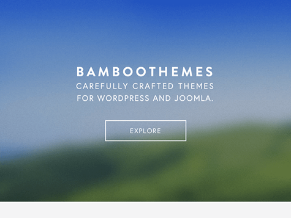
创 建干净的背景图，常见的一种模糊技巧：整体模糊，既把整张图做模糊处理；而另一种是局部模糊处理技巧，是下一项我们要谈到的，它是通过把部分图像进行模糊处理，来改变图像中的视觉焦点。
在摄影中，这个概念被称为“景深”。即使你对这个术语不熟悉，但你在现实中可能也看过这种效果。在景深浅的图像中，焦点区域非常狭窄：例如，对于肖像，主体的脸部可能是焦点，但他们的周围是完全模糊的。另一方面，在景深较宽的图像中，焦点面积较大，整个图像可能从前到后都很透明，如风景摄影。
例如，用作此活动海报背景的图像景深就比较浅，只有前景物体处于视觉焦点上：
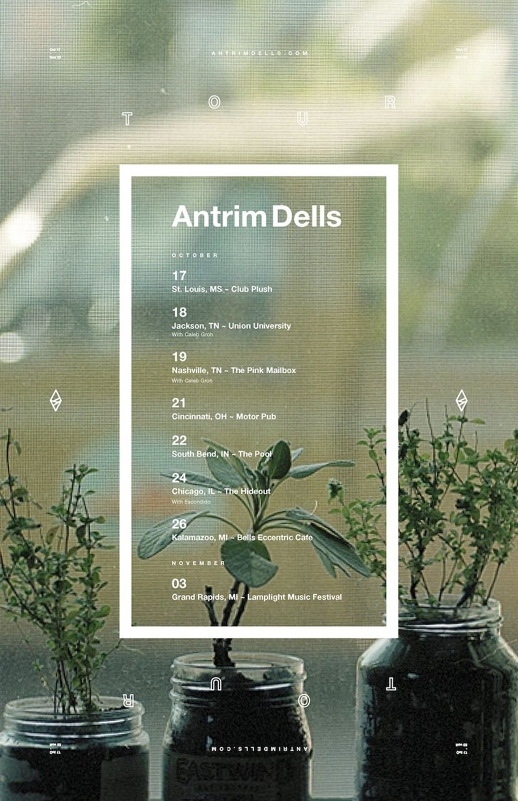
使用浅色景深图像可有效地强调视觉焦点。我们来看下一个例子中的局部模糊技巧：
02. 关注重要信息
模糊可以被添加到图像中以达到某种效果或目的，但也可以使用它来去除或强调一部分图像。通常情况下，你用模糊来确保你的视觉焦点是清晰的。如果你想让观众关注你形象的某一方面——也许是你正在推销的产品——那么你不希望它们被周围不重要的画面分散注意力。
下图系列中的六个包装形象，就使用了局部模糊效果（通过控制景深来实现），以确保广告中的产品处于视觉焦点上。但是，这些图像的焦点之外的部分并非就成了无用的空间：景深可以逐渐虚化，所以其他的物体仍然可以辨认（而且这些物体也代表了饮料口味）。
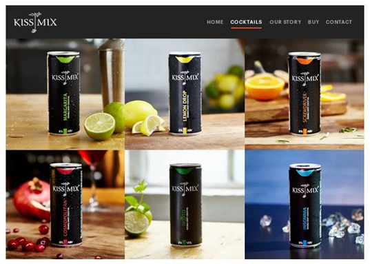
这里还有另外一种景深的使用方式（除背景之外，前景也没有对焦），但它仍然将注意力引向设计的主体——请帖上的这对幸福夫妇。

03. 传递丰富的信息内容
为什么我们将图像添加到我们的设计中？一般来说，它是为了说明和强调需要传达的信息。即使它们可能不够清晰或详细，但模糊的图像仍然可以填补这一角色；通常它只是以一种更低调的方式，而不是视觉焦点——就像杂志版面上的图片一样。
以此设计为例。健身课程的注册表使用了半透明背景，可以让女性跑步的图像在其后面展现。这张照片充当了表现设计目的和主题的即时视觉线索，可以让观众一目了然知道注册表是做什么用的。此时，选图就显得尤为重要，要确保所选择的图与内容贴近，且要突出其他元素的设计。
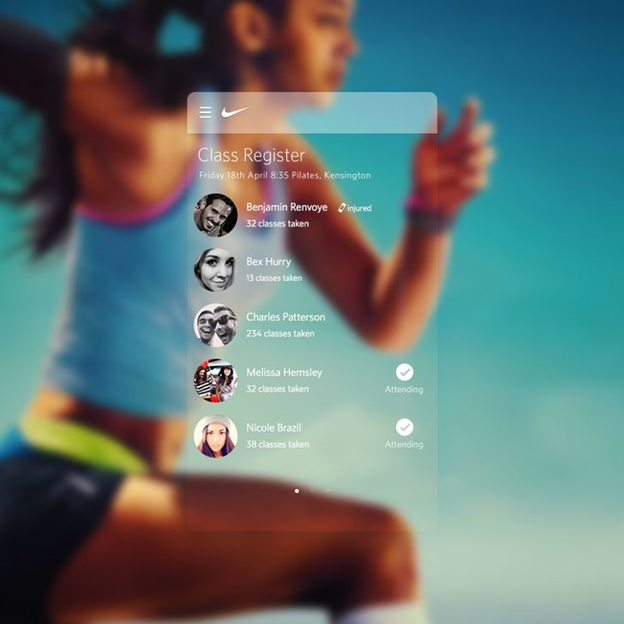
04. 为文本选择一个背景图
对于以文本为焦点的设计（可能是标志、社交媒体图形或某种手绘文字），背景图的应用就可以更好地展示它们。有时候，可以应用一个普通的白色、黑色、彩色背景图，或者一个带纹理的背景图，但使用模糊的图像作为背景图，可以增强某些文本的设计效果。
对于初学者来说，上面提到的一、三项内容可能是你需要背景虚化的原因，其目的是弱化背景以突出设计需要传达的信息。下面的模糊图像为品牌宣传起到了一定作用，从logo和广告语上，并没看出它属于什么类型的业务，而是通过图像暗示了一些缺失的信息：这是一所家具设计公司。不需添加额外的、解释性的文本，并让图像留出大量空间，这种方法使设计简化。
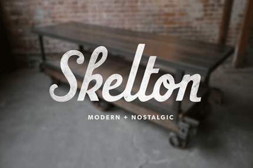
下图是另一个模糊的背景图，为一些文字排版设定基调并支持其主题：
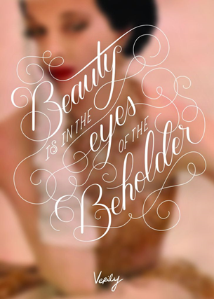
05. 用品牌代表形象
使用图像可以提升品牌的美感，例如某些颜色、图片、符号或其他视觉元素。鲜明的、个性的风格有助于加深品牌印象，与观众产生深刻的交流。
下面这个网站，将标志中狗狗图形有创意地在背景图中再一次使用。看到左上角的棕色和白色相间的小狗图案的logo了么？然后再看一下主页的照片，这个小狗看起来很像logo中的那只，不是吗？它眼睛下的黑斑甚至和标志中的狗狗一样。这肯定不是巧合，而是为了加强公司的品牌形象的巧妙设计。同时注意照片的虚化处理，使小狗成为视觉中心。
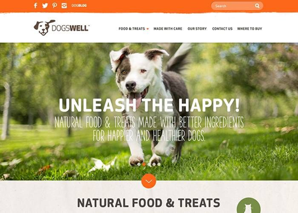
你甚至可以重复使用完全相同的图像，就像某教堂的品牌标识可以用在其网站和印刷的宣传材料上。
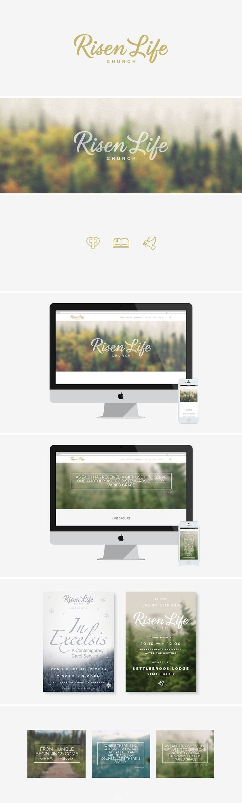
它甚至还推出了一系列以季节为主题的虚化图像，以适和全年不同时期的活动。创造性地使用，反复使用你的视觉资源，来打造出统一但不单调的品牌宣传品。
06. 强模糊效果
从微妙到强烈，不同层次的模糊，在图像中实现不同的效果和目的。比较极端的情况下，你可以把模糊的程度再加强一些，这样你会得到一张完全看不清的图片，只能隐约感觉到图片中柔和、抽象的颜色或模糊的形状。如果你想要一些比纯色背景更具动感的效果，这可能是一个不错的选择，它看起来有些形状和颜色，但没有分散观众的注意力。
这并不是一个随意的想法，或仅仅是因为它看起来很酷才去尝试。我们可以浏览下面的例子，它们很巧妙地使用了这种效果。下图是为社区花园提供便利企业网站的登陆页面，其背景图用了强烈的模糊效果，没有任何东西可以清晰地辨认出来，但图像仍然给人留下鲜花、树叶以及阳光的印象，图像也并没有贴满整个页面。
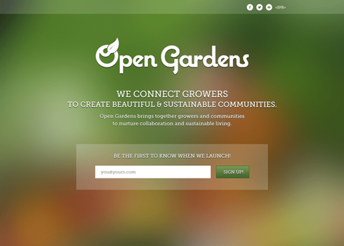
恰恰相反，这种简单的处理方式以一种更自然的方式发挥作用——即使我们不去想它，我们的大脑也会将这些颜色与花园里的花朵联系起来，这也是完全符合该网站形象的。如果不做模糊处理，留下叶子、花瓣和枝叶的细节具象图，那么白色的文字信息就不会那么容易被看到。所以这是一个聪明的设计选择：实现了品牌视觉美感与信息传达的双赢。
同样，这张高端手表修理店的名片，也应用了非常模糊的背景图像，金箔色背景底图，优雅的黑白背景，乍一看起来很抽象，但是仔细一看（在右下角，焦点图像更清晰），你会看到图像中模糊的圆形是表盘。
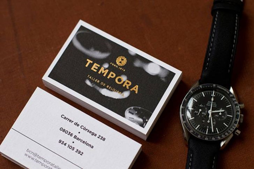
07. 柔化不需展示的具象图
与之前使用强烈模糊来消除图像中所有细节不同，这种技巧使用了柔和的局部模糊处理，以隐藏一些不需展示的具象图。这是肖像的常用方法，柔和的模糊可以更容易被接受，并使皮肤看起来更光滑。
这个眼镜品牌的图像并不完全是一幅肖像（更像产品摄影），但它有很多人物在里面且多处都使用了模糊效果。首先，注意景深是如何将你的视线直接引导到佩戴太阳镜的女人上的。除了女性的眼睛和太阳镜（这正是品牌需要宣传的产品）之外，所有其他图像都做了柔和模糊处理。但这一细微的模糊也会给整个形象带来一种迷人的、时尚的、适合品牌的形象。
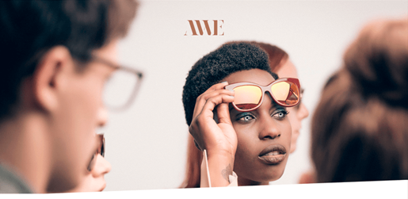
08. 增添一种微妙的场所感
在设计中表现位置时，你想标新立异，不想再用已经被无数次使用过的图形或被人用烂的导向图时，这时你可以考虑应用这种模糊背景图效果，它是一种巧妙的方式，尤其应用在与旅行相关的设计中。
例如，国外一个度假胜地的网页，原本可以使用该度假建筑本身颜色丰富清晰的图像。但设计师却另辟蹊径，选择了山景的单色照片，雄壮的山景充满整个页面，以强调度假村的位置（和相关滑雪的信息）。此外，从底部到顶部淡化的渐变模糊，使主要信息显示在页面顶部的一个清晰的位置。
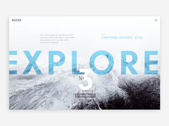
同样，下面的季节性销售广告创造了一定的地方感——特别是与促销主题相匹配的阳光明媚的夏季场所。
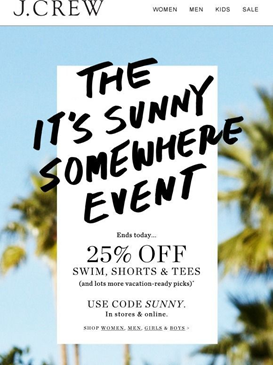
09. 动态效果
应用在摄影中的模糊是一种特殊的模糊效果，称为运动模糊，该图片看起来像一个物体快速移动或经过一个场景。模糊通常应用在水平方向上，位于移动物体/焦点之后，这可以为你的图像增加速度感或活动感。
下图中宣传设计就利用运动模糊，以引起人们对广告（汽车）的关注。因为除了展示汽车的“速度”外，还有什么特性能让汽车品牌显得更好呢？就像我们已经看到的许多例子一样，这个图像的模糊化处理，也创造了一个良好的、可供文字排版的空间。
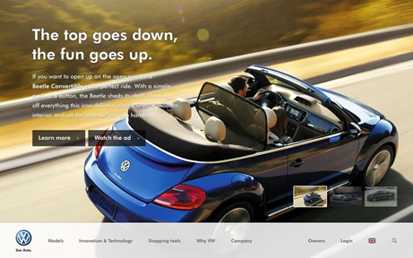
另一个案例是下面这本杂志封面，使用了一幅动感模糊的照片，来传达纽约这个“不夜城”的喧嚣——每个人总是匆匆忙忙的。
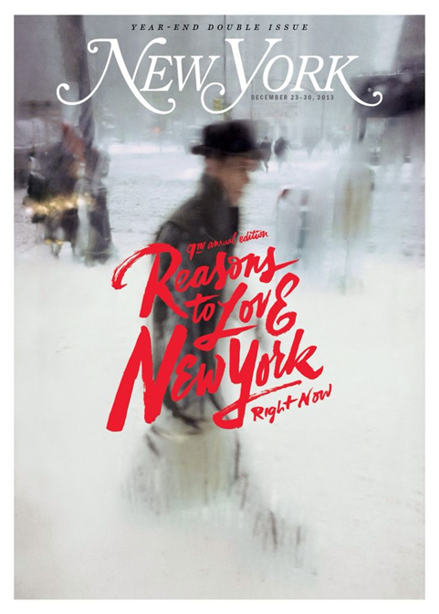
10. 打动人的情绪
没有什么比好的形象能给你的设计带来某种心情或氛围。许多元素可以为图像设定一种设计的氛围，例如内容，当然还有颜色、光影、构图等等。
下面的网页传达了一种非常特殊的情绪，毫无疑问，这种情绪是经过精心挑选的，可以将其所代表的夏令营形象化。首先，设计师用了显然是代表夏天的暖色调，但图像的模糊（以及露营者脸上的表情）看上去也代表了夏日狂欢——正如页面的标题所称的那样：“千载难逢的夏令营”。
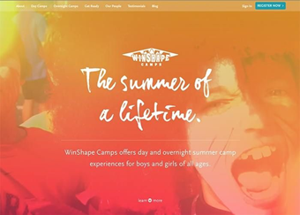
作为一种不同的方法，这款婚纱摄影手册中的图像模糊，有助于营造出柔和而梦幻的心情：
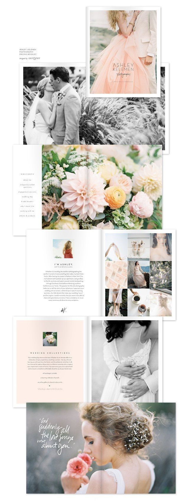

济南海右博纳品牌营销咨询有限公司
Copyright 2001-2019 All Rights Reserved Sivibrand.
王伟品牌顾问微信